Nach lesen vieler Nähanleitungen im Internet und Ausprobieren einiger weniger, bin ich zu dem Schluss gekommen dass die hier beschriebene Stoffmaske der beste Kompromiss zwischen "einfach zu nähen" und "praktisch in der Benutzung" ist.
Um diese Anleitung einzuordnen kann ich sagen, dass ich ganz passabel
nähen kann und das sogar schon beruflich betrieben habe aber
Nähen eigentlich nicht gerne tue und da bestrebt bin meine Arbeit so
zu strukturieren dass es nicht zu lange dauert und umständlich ist.
Und als Mensch der zu Zeiten der Corona-Krise Maske trägt, habe ich
den Anspruch dass ich damit joggen gehen kann, es muss also wirklich
praktisch und robust sein, kein Spielzeug.
Mit Medizintechnik und den Anforderungen im Krankenhaus bin ich nicht
vertraut.
Grundsätzlich sind die folgenden Sachen verhandelbar aber wenn ihr es besorgen könnt, erleichtert ihr euer Näh-Leben erheblich:
(und das heißt: wenn du nähen kannst, kannst du einfach zum nächsten Absatz gehen.)
Deine Nähmaschine sollte gerade Stiche in eine Richtung machen, kein Zickzack oder sonst fancy shit, und ungefähr zwei Millimeter Abstand zwischen den Stichen. Wenn das nicht geht musst, du Leute um Hilfe bitten und/oder die Gebrauchsanleitung deiner Nähmaschine lesen bis es geht.
Der Anfang und das Ende einer Naht geht so: du nähst da wo die Naht beginnt einmal ungefähr 1,5cm vor und zurück, an der Stelle ist dann also 2-3mal genäht. Wenn du mit der Naht fertig bist, schneidest du die überhängenden Fäden einfach ab. Einen Knoten rein machen, verbessert die Sache nicht.
Dinge lassen sich beim Nähen normalerweise besser verarbeiten wenn
sie frisch gebügelt sind, beim Nähen ständig zwischendurch
was zu
bügeln ist normal. Wenn irgendwas in dieser
Anleitung erstaunlich beschwerlich geht, ist einfach mal bügeln
möglicherweise ein guter Tipp.
Der Gebrauch von Bügeleisen und Stecknadeln ist eine
Frage von persönlichem Arbeitsstil von Hobbynäher:innen, du
musst letztlich selber raus kriegen bei welchen Arbeitsschritten dir
Bügeleisen und Stecknadeln helfen, probiere es im Zweifelsfall mit
und ohne aus.
Du schneidest die Stoffteile aus (1 Stück 17 * 34 cm und 2 Stück 4 * ca 70 cm), und bügelst die länglichen Streifen so dass die Seiten ca 1 cm eingeklappt sind. Dafür ist es praktisch wenn man den Streifen unter einer an das Bügelbrett gesteckten Nadel durchführt, siehe Bild.
 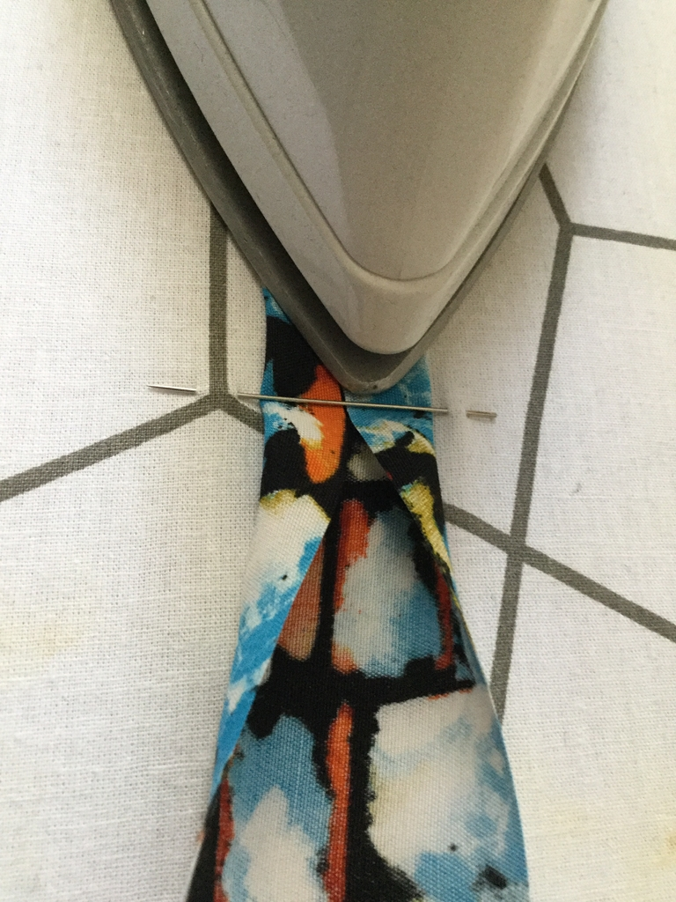
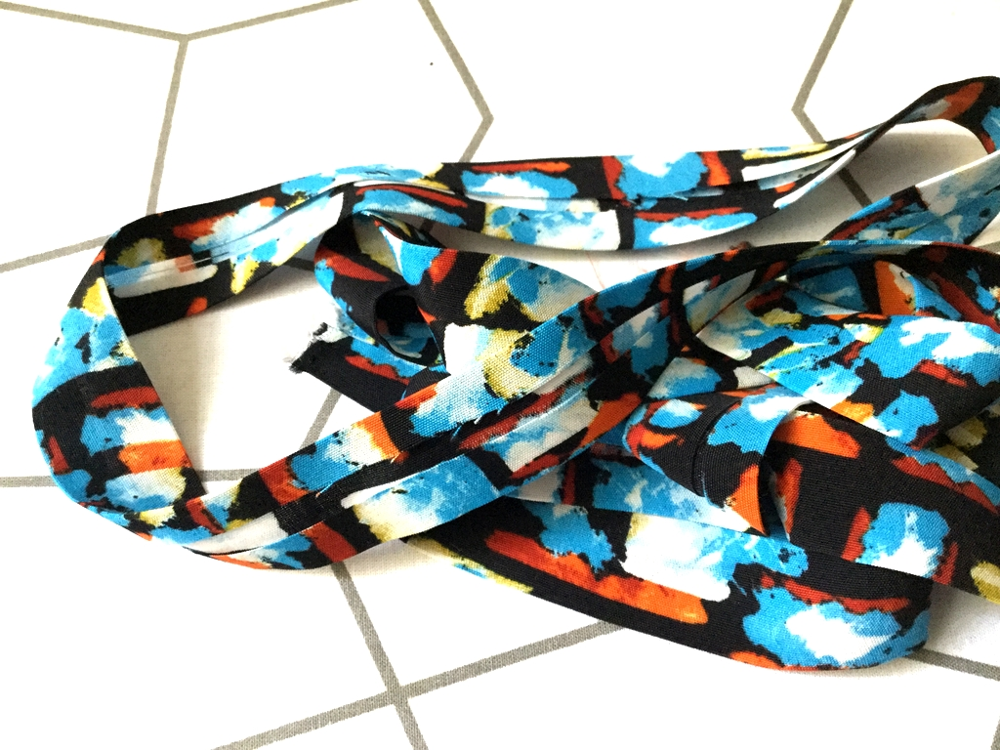
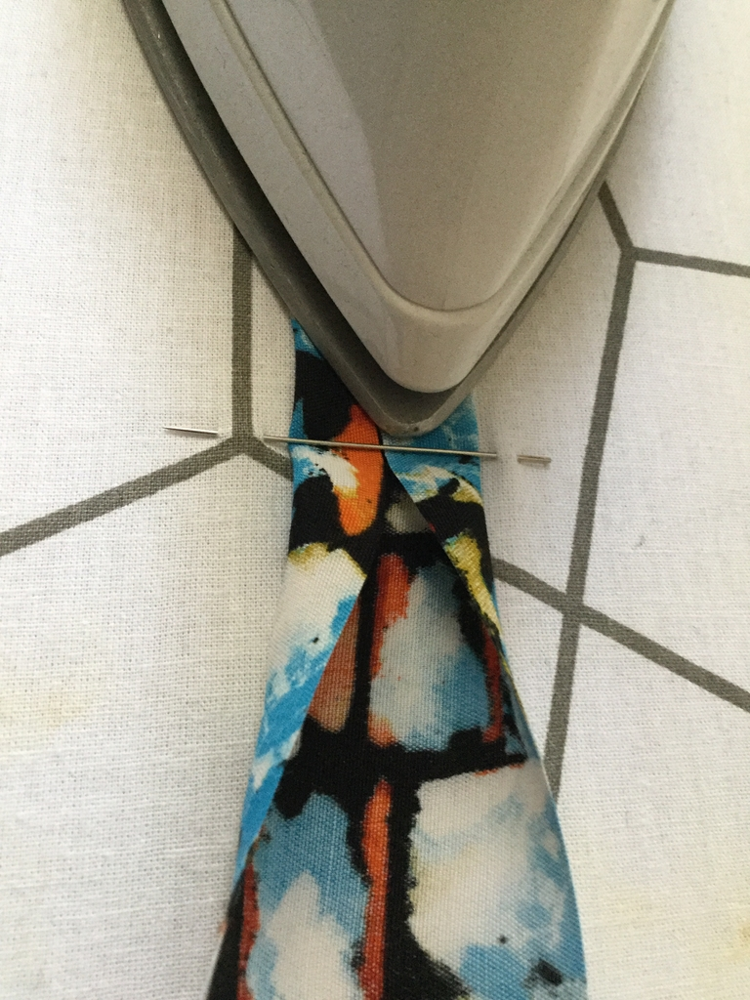
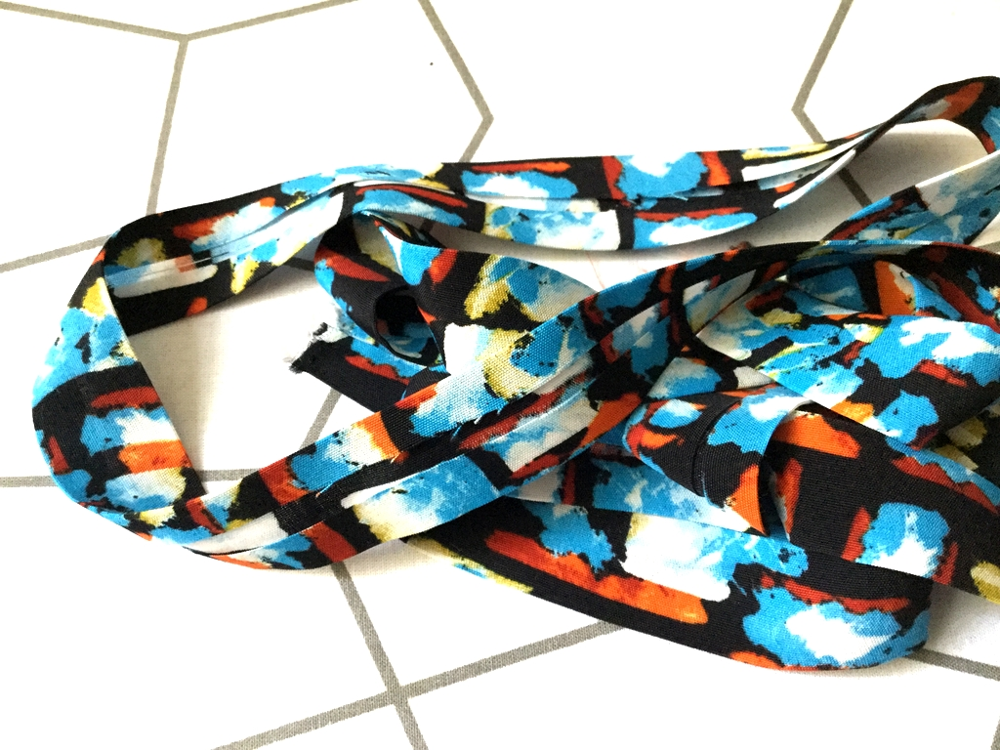
Die kürzeren Seiten des rechteckigen Stücks faltest du zwei mal ca 1 cm um und nähst es fest.
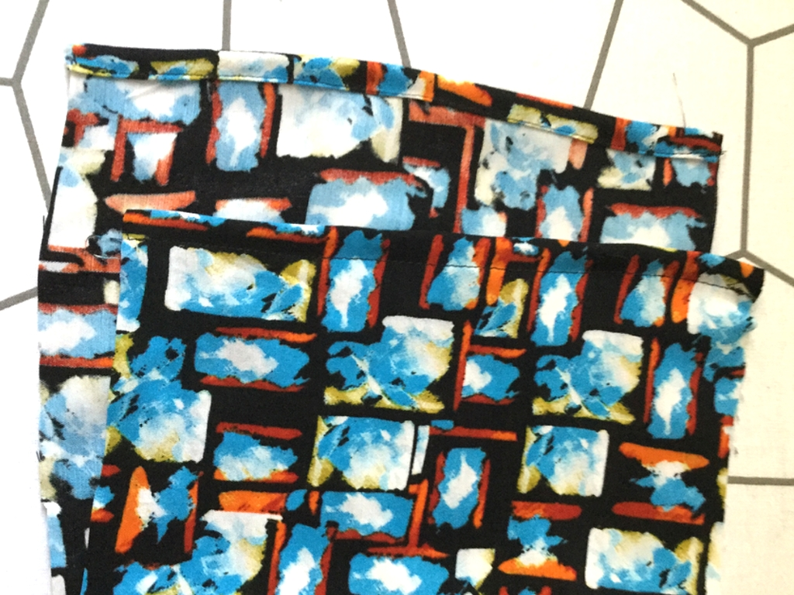Dann faltest du das rechteckige Stück Stoff einmal zusammen so dass es fast quadratisch ist und faltest am Rand drei Falten und steckst sie fest wie auf dem Bild.
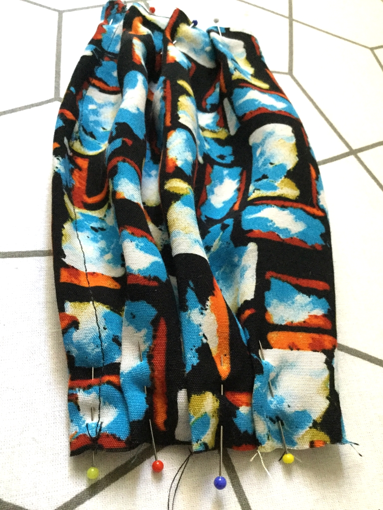Diese Falten fixierst du mit einer Naht. Nachdem du die Stecknadeln entfernt hast, hast du eine Masken-Grundform die an einer Seite offen ist. Dies wird die untere Seite sein (am Kinn) und der Grund weshalb es offen ist ist, dass man dann einen Filter in die Maske einlegen kann wenn man denn einen hat.
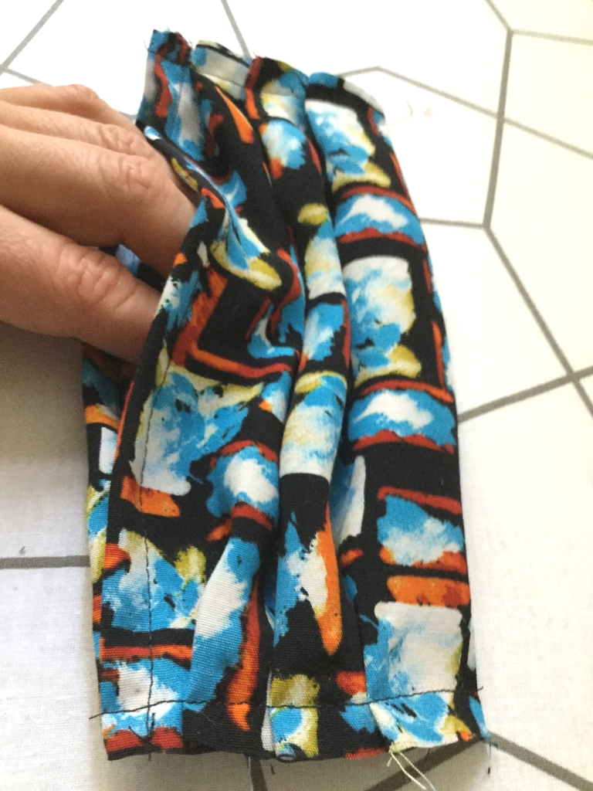Circa zwei Millimeter neben der Heftnaht gerade abzuschneiden, erleichtert die weitere Arbeit.

Du steckst das gebügelte Bändsel derart am Rand der Maske fest dass ein 12 cm langes Stück an der offenen (Kinn) Seite übersteht und ein langes an der anderen.

Dann nähst du das Bändsel zusammen und die Maske rein, beginnend von der Kinnseite.
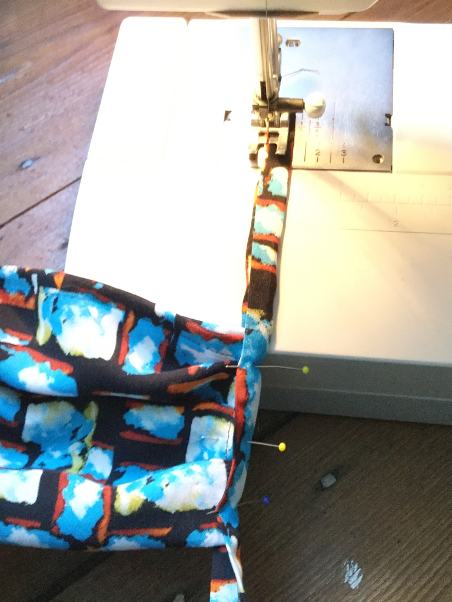Sobald du soweit genäht hast dass die Maske eingenäht ist, schneidest du das Ende des kurzen Bändsels schräg ab und steckst es ca 15 cm von der Maske entfernt in das gleich zuzunähende Bändselstück rein und nähst drüber bis zum längeren Bändselende.

 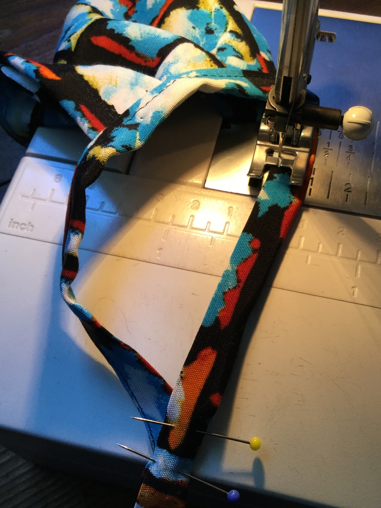
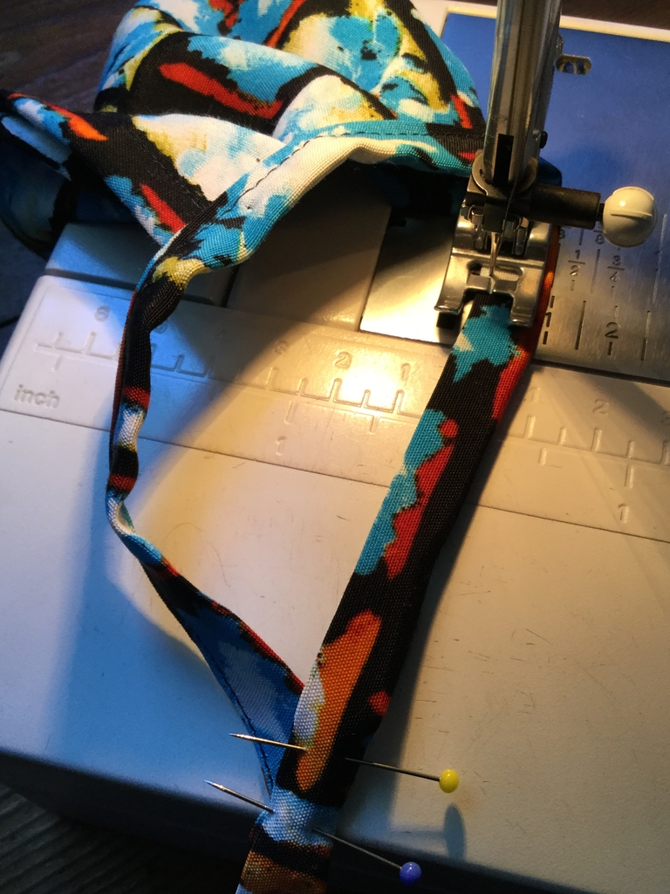

Bevor du ganz am Ende bist, klappst du das Ende des längeren Bändselende ein, so erhältst du einen sauberen Abschluss.
 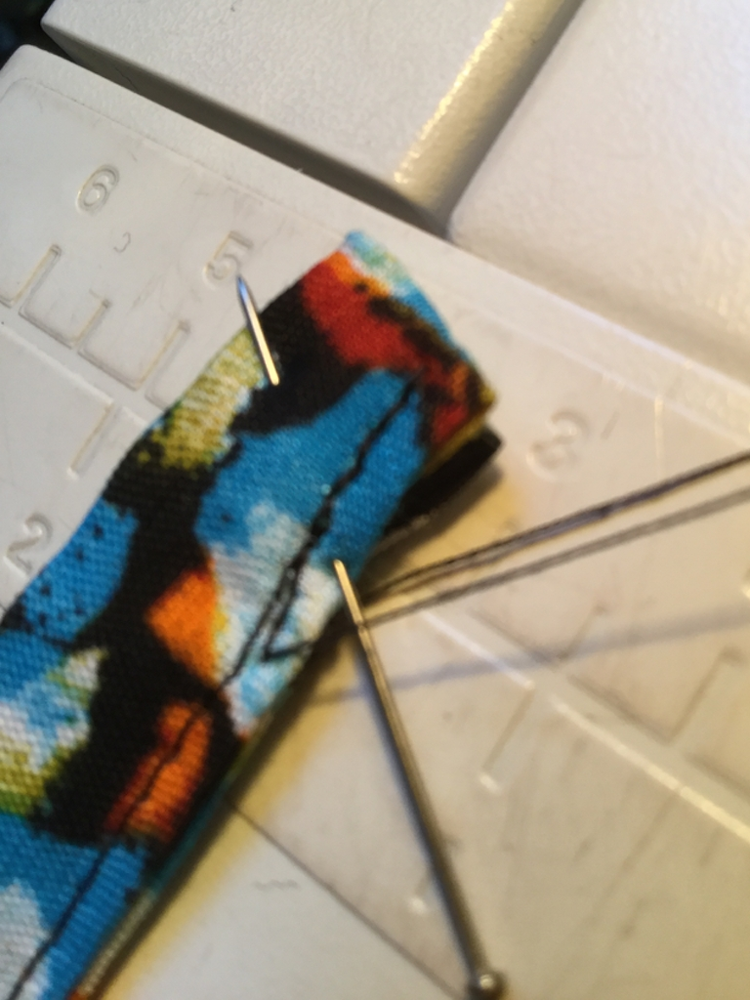
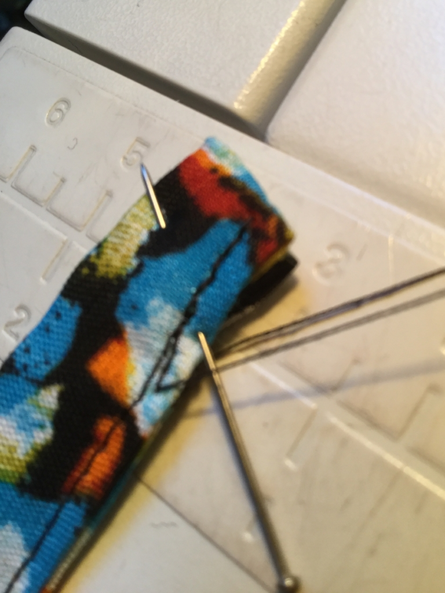
Du wiederholst das selbe auf der anderen Seite. Achtung: das kürzere Bändselende muss wieder an die Kinnseite.
Ergebnis:
Du legst die Maske an dein Gesicht, die Schlaufen um die Ohren, und knotest sie hinten zu. Passt es? Wenn nein hast du die abgeschnittenen Teile eventuell an der falschen Stelle rein genäht, trenne dann dieses Stück der Naht wieder auf und nähe es wo anders rein.
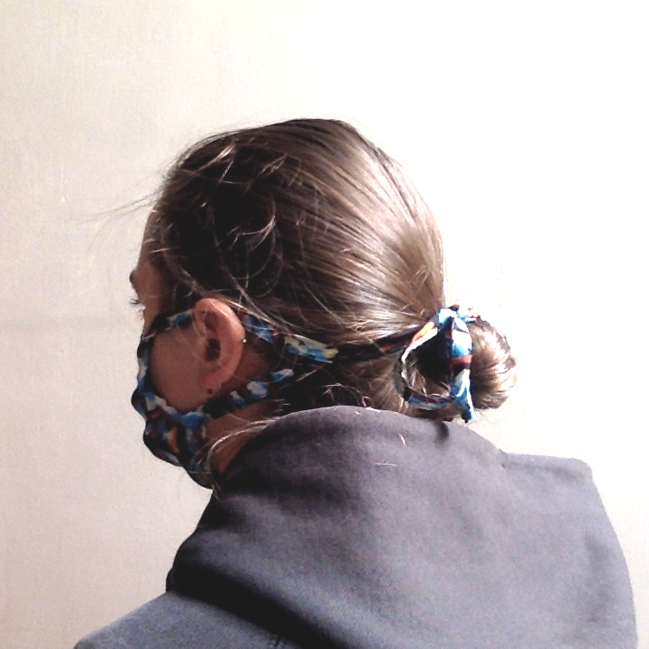Du biegst den ca 12 cm langen Draht an den Enden ca 1 cm um, legst ihn vergleichend neben deine Maske und steckst dir ab von wo bis wo du den Tunnel für den Draht nähen willst. Es muss an mindestens einer Seite noch Platz sein damit man den Draht rein und raus machen kann, zum Beispiel wenn man die Maske wäscht.
Dann nähst du eine Naht ca einen Halben Centimeter vom Rand entfernt parallel zum Rand, da wo der Draht rein soll.

Du schneidest eventuell noch raus hängende Fäden ab und schiebst den Draht in den Tunnel, fertig ist die Maske!
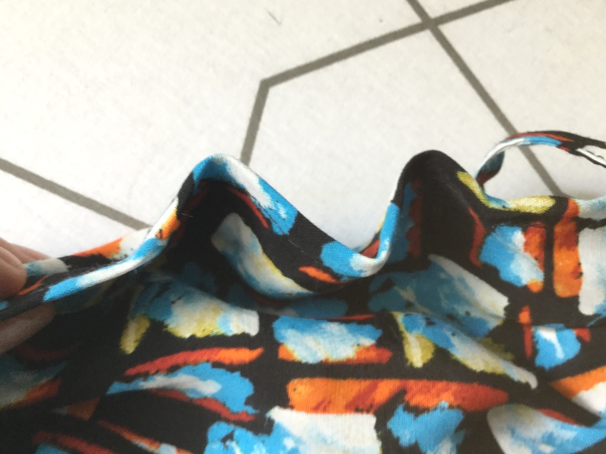Zum Anziehen setzt du die Maske auf, machst im Nacken eine Schleife und biegst den Nasendraht richtig hin.